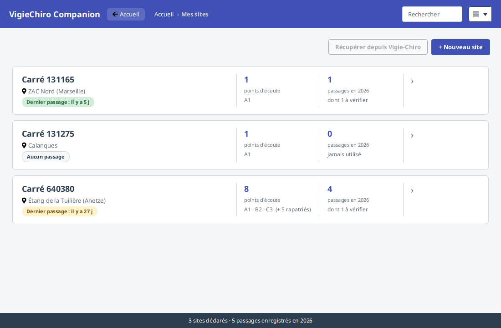
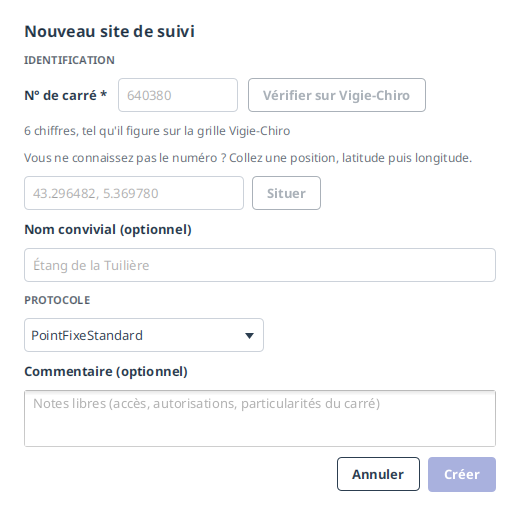
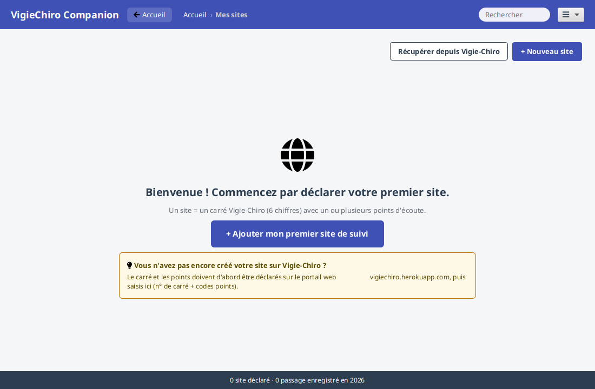
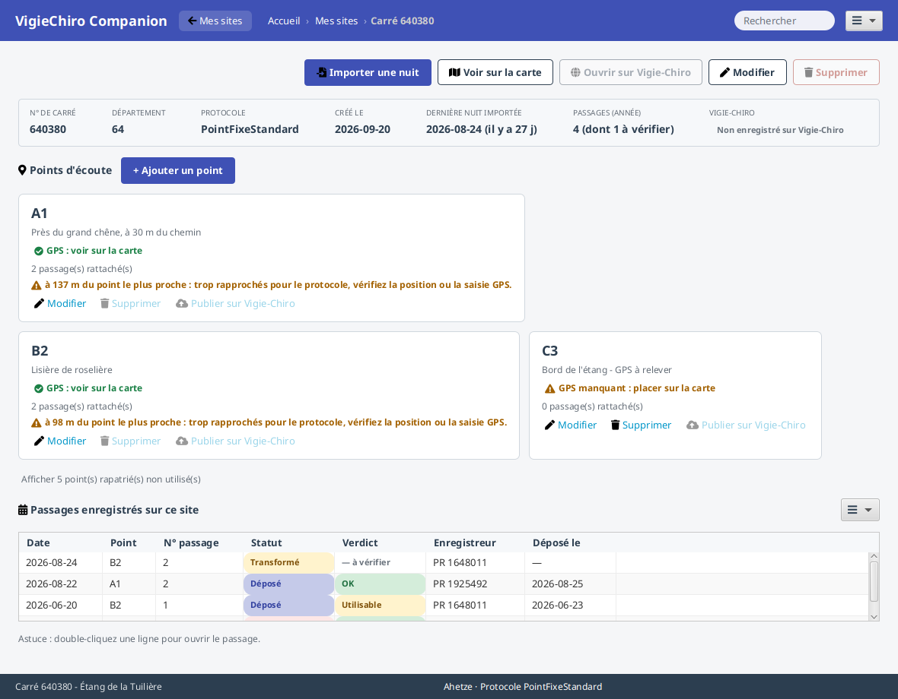
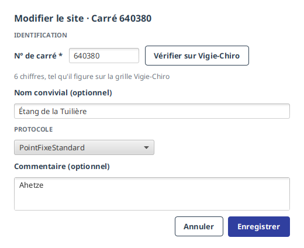
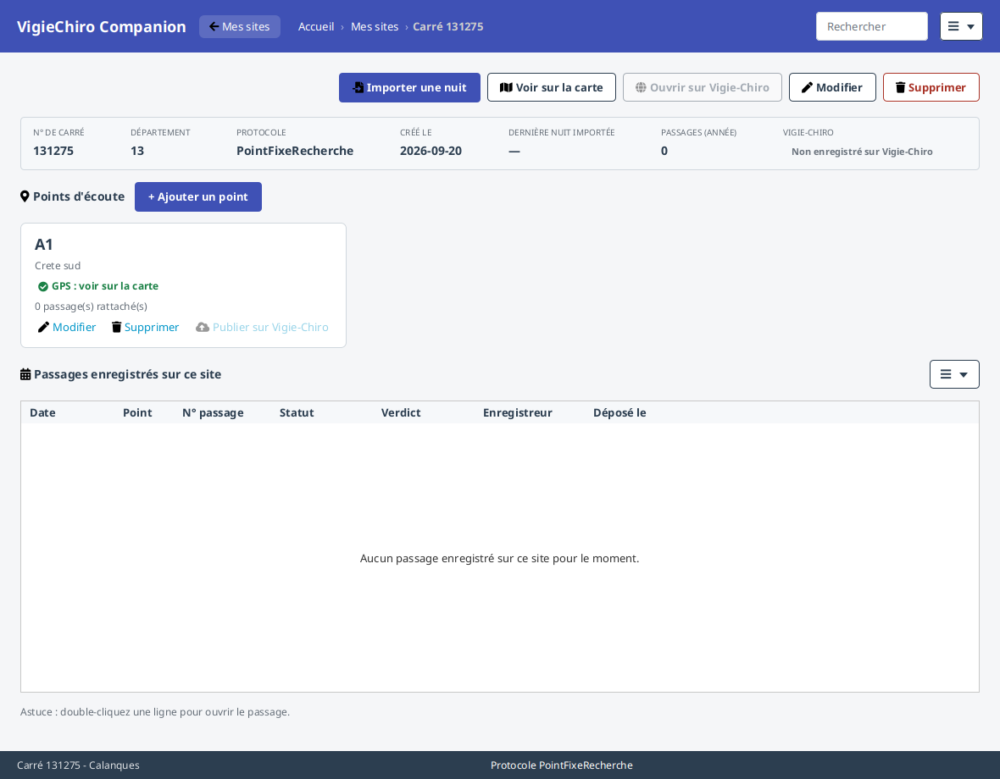
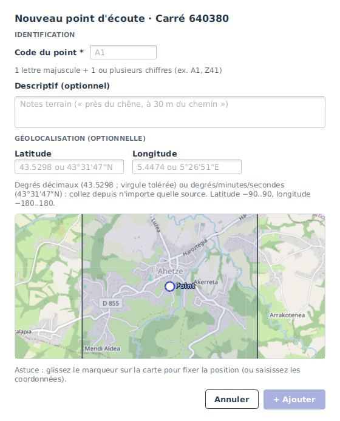
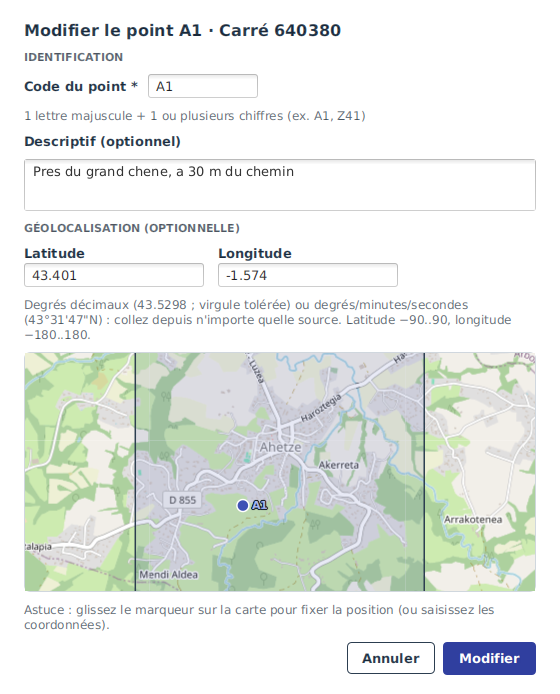

Sites¶
Les écrans Sites servent à gérer vos sites de suivi : un site correspond à un carré
Vigie-Chiro (six chiffres) et à ses points d'écoute (par exemple A1, B2). C'est le point
de départ de tout le reste : vous ne pouvez pas importer une nuit tant qu'un site n'est pas déclaré.
Mes sites¶
L'écran Mes sites liste vos sites sous forme de cartes. Chaque carte indique le numéro de carré, son nom, le nombre de points d'écoute, le nombre de passages enregistrés dans l'année, et un badge de fraîcheur rappelant la date du dernier passage. Un bouton Importer une nuit est proposé sur chaque carte, et + Nouveau site en haut à droite.

Le badge de fraîcheur passe du vert (dernier passage récent) à l'orange (plus ancien), au gris (aucun passage). Un clic sur une carte ouvre le détail du site.
Déclarer un site¶
+ Nouveau site ouvre une fenêtre de saisie. Un seul champ est obligatoire : le numéro de carré, six chiffres, tel qu'il figure sur la grille Vigie-Chiro. Le bouton Créer reste fermé tant qu'il n'est pas complet, et le champ rougit dès qu'il est saisi mais incomplet : l'application vous empêche de vous tromper plutôt que de vous le reprocher après coup.
Le nom convivial, le protocole et le commentaire sont facultatifs - vous pouvez déclarer un carré à la volée sur le terrain et les compléter plus tard, depuis la fiche du site.

Si le carré est déjà déclaré, le motif s'affiche dans la fenêtre, sous le champ, et votre saisie est conservée : corrigez le numéro sans tout recommencer.
Chaque carte porte aussi, quand l'application est connectée à Vigie-Chiro, un badge d'état plateforme : « Enregistré sur Vigie-Chiro » (bleu) quand le carré est relié au portail, « Verrouillé sur Vigie-Chiro » (vert) quand il est en plus verrouillé par le MNHN - c'est l'état favorable, celui qui autorise le dépôt des nuits. Pas de badge : le site n'est pas encore rattaché (connectez-vous ou synchronisez).
Le bouton Récupérer depuis Vigie-Chiro (en haut à droite) récupère à la demande vos sites et points déclarés sur le portail : les sites manquants sont créés localement, ceux déjà présents sont simplement reliés - vos données locales ne sont jamais écrasées. C'est la même synchronisation que celle exécutée automatiquement à la connexion ; un message sous le bandeau récapitule ce qui a été récupéré (ou signale qu'il n'y avait rien à récupérer, par exemple hors connexion).
Ce message dit chaque nature séparément - sites, nuits, taxons - et sur combien : « 12 nuit(s) récupérée(s) sur 55, dont 40 en attente d'analyse Vigie-Chiro ». Un compteur seul serait exact et pourtant muet sur la part qui reste à venir.
Si l'une des natures n'a pas pu être récupérée, elle le dit à côté des autres et non à leur place : une synchronisation où les sites sont à jour et les nuits injoignables vous montre les deux.
Il rapatrie aussi vos nuits déjà déposées sur la plateforme, avec leur identité : date, point, numéro de passage, mais également l'enregistreur, la météo et le micro. Vous retrouvez donc votre historique lisible dès la première synchronisation - c'est ce qui permet, après une réinstallation ou sur un nouveau poste, de repartir de la plateforme plutôt que de zéro.
Elle rapatrie enfin leur contenu : les identifications faites par Vigie-Chiro et la liste des fichiers de la nuit. Vos nuits sont donc consultables dès la première synchronisation.
Ce que la synchronisation ne peut pas ramener
Les sons. Ils ne sont pas conservés sur la plateforme : une nuit récupérée se consulte, elle ne s'écoute pas. Si vous retrouvez la carte d'origine ou une sauvegarde, ouvrez la nuit et utilisez Réactiver ce passage : l'application y reconnaît vos fichiers et les rebranche.
Les nuits que Vigie-Chiro n'a pas fini d'analyser. Leurs identifications n'existent pas encore. La synchronisation le dit (« N en attente d'analyse Vigie-Chiro ») et les reprendra d'elle-même au prochain passage. Si le compte rendu indique plutôt « N non récupérée(s), à réessayer », c'est la liaison avec la plateforme qui a manqué, pas l'analyse : relancez la synchronisation.
La synchronisation peut être longue
Elle va chercher le contenu de chaque nuit du compte. Sur un historique fourni, comptez plusieurs minutes à la première fois. Une barre indique où elle en est, et Annuler l'interrompt à tout moment : ce qui a déjà été récupéré est conservé, et la fois suivante reprend le reste.
La synchronisation rapatrie tous les points d'un carré (utile pour importer une nuit sur un point pas encore utilisé). Mais un carré Point Fixe en compte des dizaines, dont un seul sert : les vues ne mettent en avant que les points utilisés (au moins un passage) ou que vous avez ajoutés à la main, et résument les autres - « + N rapatriés » sur la carte du site, un lien « Afficher les points non utilisés » dans son détail. Rien n'est perdu : les points rapatriés restent disponibles, juste repliés.
Premier lancement¶
À la toute première ouverture, aucun site n'est déclaré : l'écran vous guide vers la création de votre premier site, et rappelle que le carré et ses points doivent d'abord exister sur le portail Vigie-Chiro.

Détail d'un site¶
Le détail d'un site réunit son identité (numéro de carré, département, protocole, date de création, dernière nuit importée, nombre de passages), ses points d'écoute et la liste de ses passages.

Le tableau des passages se trie, se réorganise et laisse choisir ses colonnes (clic droit ou menu ☰ « outils ») : voir Personnaliser les tableaux.
Un double-clic sur une ligne ouvre l'écran du passage. Le clic droit réunit les actions de cette nuit : ouvrir le passage, ouvrir sa page Vigie-Chiro (grisée si le passage n'est pas lié à la plateforme) et copier son code de point : voir Agir sur une ligne.
Le bouton Modifier (bandeau d'identité) ouvre une fenêtre pour éditer la fiche du site : numéro de carré, nom, protocole et commentaire. Pratique pour corriger une saisie ou compléter le site après coup, sans repasser par sa création.
Le bouton Ouvrir sur Vigie-Chiro ouvre la page de ce site sur le portail Vigie-Chiro dans votre navigateur : pratique pour vérifier d'un coup d'œil que le rattachement est le bon. Il reste grisé tant que le site n'est pas relié au portail (connectez-vous, ou utilisez « Récupérer depuis Vigie-Chiro » sur l'écran Mes sites).

- Points d'écoute : une carte par point, avec sa description, son statut GPS et le nombre de passages rattachés. Quand les coordonnées sont renseignées, le lien « GPS : voir sur la carte », précédé d'une icône verte de validation, ouvre la carte multi-sites centrée sur ce point (où le mode édition permet de corriger sa position). Quand elles manquent, le lien « GPS manquant : placer sur la carte », précédé d'une icône d'avertissement, ouvre cette même carte sur le carré du site, mode édition déjà actif : le point, affiché au centre de son carré, n'a plus qu'à être glissé à sa vraie position (puis enregistré). Le bouton + Ajouter un point crée un nouveau point. Chaque carte indique aussi la distance au point le plus proche du site ; si deux points sont anormalement rapprochés (sous le seuil de protocole), une icône d'avertissement le signale, pour repérer une saisie GPS erronée ou des points trop serrés.
- Passages enregistrés : un tableau récapitulant, pour chaque nuit, sa date, son point, son numéro, son statut (Transformé, Vérifié, Déposé...), son verdict et son enregistreur.
Sur un site qui n'a pas encore de passage, le tableau est simplement vide :

Ajouter ou modifier un point d'écoute¶
L'ajout ou la modification d'un point d'écoute se fait dans une fenêtre dédiée : code du point, description, et coordonnées GPS (facultatives). En création, le formulaire est vierge ; en modification, il est pré-rempli avec les valeurs existantes.
La fenêtre intègre une carte-outil centrée sur le carré du site, synchronisée dans les deux sens avec les champs latitude / longitude (#153) : glissez le marqueur sur la carte pour fixer la position (les champs se remplissent), ou saisissez les coordonnées (le marqueur se déplace).
Dès qu'un point géolocalisé est enregistré, sa commune est déterminée automatiquement depuis ses
coordonnées (service public de géocodage, connexion requise) et mémorisée : c'est elle que retrouvent
ensuite les recherches (« aix » dans Carte & passages ou la recherche globale) et
l'export CSV des observations. Hors ligne, la commune attend simplement une prochaine occasion : une
synchronisation, un nouvel enregistrement du point, ou la commande rattraper-communes en ligne de
commande.
Les champs acceptent deux formats, au choix : degrés décimaux (43.5298, la virgule est
tolérée) ou degrés/minutes/secondes (43°31'47"N, 1°34'26.4"W). Vous pouvez donc coller
des coordonnées depuis n'importe quelle source ; elles sont converties automatiquement, et une saisie
hors plage (latitude −90..90, longitude −180..180) est refusée.
Tant qu'aucun GPS n'est renseigné, le marqueur démarre au centre du carré en position
approximative (anneau pointillé) : un point de départ à caler, pas une position mesurée.

